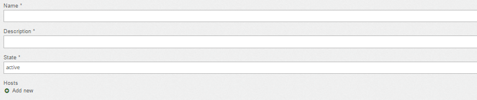
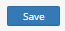

Section: Home Gate Add
Description:
Section Add allows to setup the settings for the future gateway connection.
For creating a gateway fill up the fields
| Field | Description | Example |
|---|---|---|
| Name* | name of the gateway | Test |
| Description* | description of the gateway | Gateway for testing |
| State* | condition of the gateway | Active |
Note | Always fill up the fields with *
Screenshot from Admin panel :

Next step is to add hosting
Screenshot from Admin panel :
After all fields up the finish line is to press the button 
Section: Home Gate List
Description:
This inset shows a gateway or gateways in the Admin portal. You can watch the status of the gate or make updates.
Example
| Name | Description | Gate status | Actions |
|---|---|---|---|
| Test gateway | This gateway is for my testing | inactive | |
| Live gateway | This is a live processing gateway | active |
Details:
Button - allows to make some changes in the gateway. Possible change name and description or make the gateway inactive.